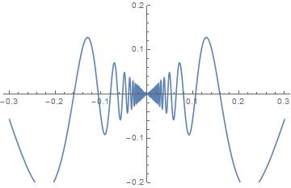
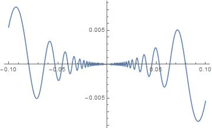
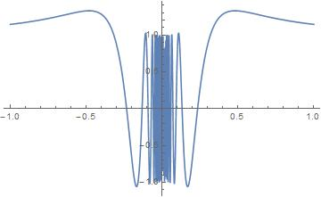
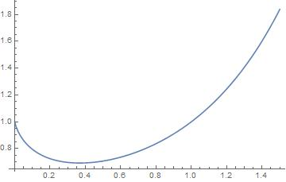

グラフなど 講義中に出てきたグラフをMathematicaなどで描画しています． 微分積分学 関数 \( \displaystyle f(x)=x\sin\frac{1}{x} \) のグラフ．  因みにこのグラフからは読み取れませんが， \( x\to\pm\infty \) とすれば \( f(x)\to 1\) です． 関数 \( \displaystyle x^2\sin\frac{1}{x} \)のグラフ．  上の関数の導関数 \( \displaystyle D_x\left(x^2\sin\frac{1}{x}\right) \)のグラフ．  \( x\to 0 \)で激しく振動していることが見て取れる． 関数 \( f(x)=x^x \)のグラフ．  \( x=1/e \)で極小値をとる． Last modified 2017年5月18日